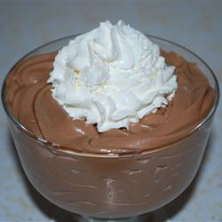

Chocolademousse

Een hemels chocoladedessert met maar twee ingrediënten en erg makkelijk!
Na een paar uur koelen kun je de stijf geworden mousse ook gebruiken om chocoladetruffels te maken.
Ingrediënten
200 g pure chocola
284 ml slagroom
Bereidingswijze
Breek de chocola in stukjes en smelt au bain marie. Klop ondertussen de slagroom bijna stijf. Als de slagroom te stijf wordt, zal de mousse wat dikker worden.
Schenk de gesmolten chocola bij de slagroom. Meng de chocola voorzichtig door de slagroom, zodat de lucht er niet uitgeslagen wordt.
Giet het geheel in een doorzichtige kom and zet in de koelkast (ongeveer 30 minuten) om het stijf en koud te laten worden. Serveer jezelf en eventueel nog drie anderen.
Klik HIER om terug te gaan naar de hoofdpagina.